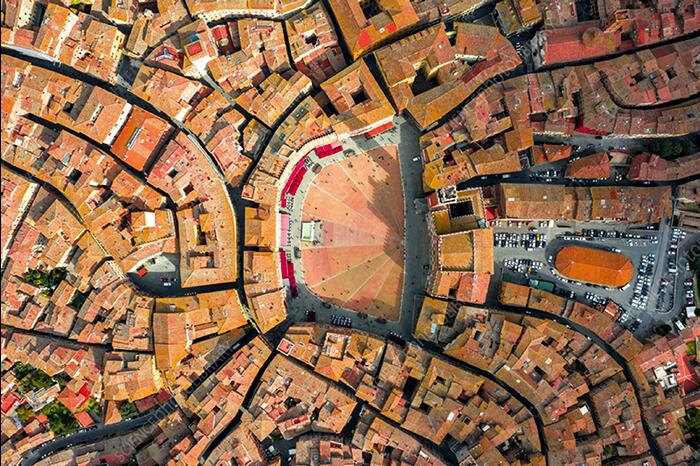
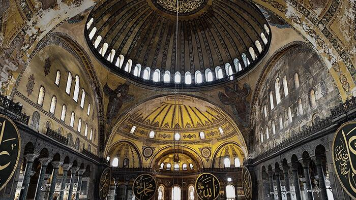
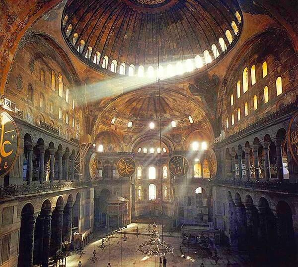
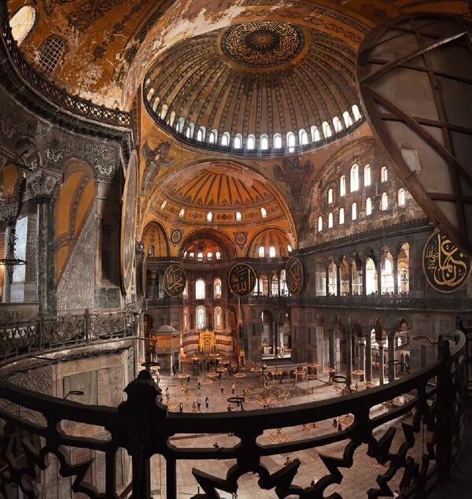
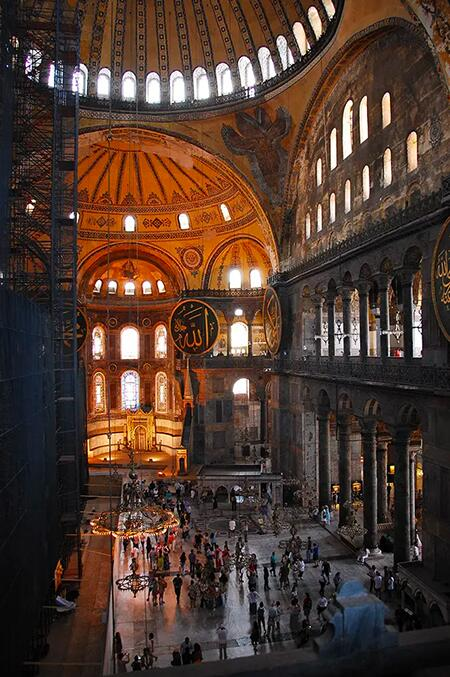
In Santa Sofia la luce non è un effetto, ma la vera struttura percettiva dell’edificio. L’enorme cupola non si percepisce come un corpo pesante, ma come una superficie sospesa, quasi priva di peso, perché il suo attacco al tamburo è dissolto da una corona continua di finestre. La luce, filtrata e riflessa dalle superfici dorate dei mosaici, cancella i limiti fisici e genera un’atmosfera mobile, in cui lo spazio sembra vibrare più che definirsi.
La percezione non è quella di un volume stabile, ma di un campo luminoso che si espande, si ammorbidisce, si stratifica: un interno che muta con le ore del giorno, in cui la materia architettonica diventa supporto di un’esperienza visiva più che costruttiva. La massa appare leggera, i pilastri si dissolvono nella penombra, la cupola galleggia sopra un mare di luce diffusa.
Per questo Santa Sofia è un caso esemplare nella scheda dedicata alle componenti fondamentali dello spazio: mostra con assoluta chiarezza che la luce costruisce lo spazio più della geometria. È la luce a definire le gerarchie, a generare profondità, a stabilire il ritmo tra zone illuminate e zone in ombra. Qui la forma non è ciò che si disegna, ma ciò che la luce rende visibile: un organismo che vive grazie all’intensità, alla qualità e alla direzione della luminosità che lo attraversa.
Santa Sofia insegna agli studenti che la luce non “illumina” un’architettura: la inventa. Prima della tecnica, prima dell’immagine, prima della funzione, è la luce che definisce la vera sostanza percettiva dello spazio.
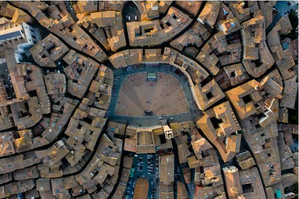
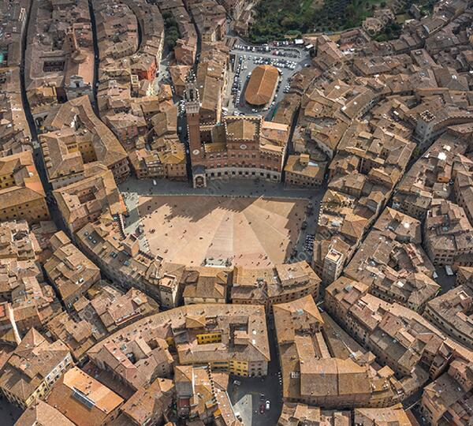
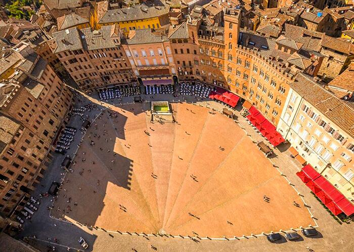
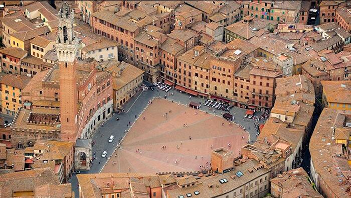
Il vuoto come struttura dello spazio
Piazza del Campo è uno dei casi più chiari in cui il vuoto non è assenza, ma la vera forma dell’architettura. A Siena la piazza non è uno spazio lasciato libero tra gli edifici: è una figura precisa, un organismo unitario che tiene insieme la città. La sua geometria a conchiglia – inclinata, convessa, radiale – fa del vuoto un corpo attivo, capace di raccogliere e orientare il movimento come un bacino naturale.
Qui il vuoto agisce come materia. La leggera pendenza spinge il corpo verso il Palazzo Pubblico, le linee di mattoni disegnano vettori che convergono nel punto focale, gli undici settori della pavimentazione trasformano la superficie in un campo energetico articolato. Lo spazio non è neutro: esercita una forza, un’attrazione centripeta che dà unità alla sequenza urbana.
Ciò che rende Piazza del Campo esemplare è il fatto che il vuoto possiede una identità più forte degli edifici che la delimitano. La percezione non coglie la somma delle facciate, ma la figura complessiva dello spazio che esse contribuiscono a generare. L’architettura qui non è nel costruito, ma nella relazione tra le parti, nel modo in cui l’assenza di materia diventa presenza formale e direzionale.
Per questo la piazza è un caso didattico fondamentale: mostra che progettare il vuoto significa costruire la struttura percettiva della città. La forma non nasce dall’oggetto, ma dall’organizzazione dello spazio condiviso; non dal pieno, ma dal campo che unisce. Piazza del Campo rivela agli studenti che il vuoto è uno strumento progettuale: una figura, una direzione, una intensità. Ed è spesso il luogo in cui la città trova la sua identità più profonda.
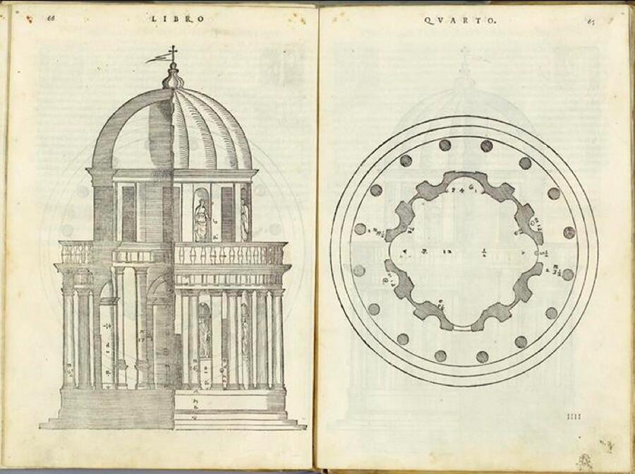
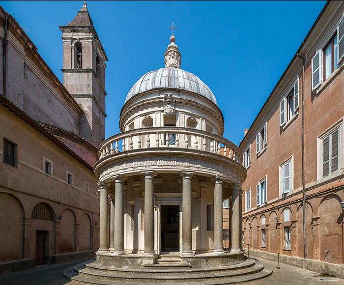
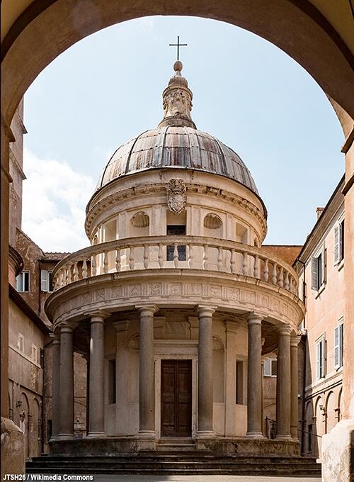
La proporzione come ordine dello spazio
Il Tempietto di San Pietro in Montorio è una delle formulazioni più pure della proporzione come principio generatore dello spazio architettonico. Qui la proporzione non è ornamento matematico, né semplice armonia visiva: è la struttura che tiene insieme forma, misura, ritmo e gravità, dando all’architettura un’identità necessaria, quasi inevitabile.
Il piccolo edificio si presenta come un organismo compiuto, in cui ogni parte dipende dall’altra secondo rapporti rigorosi: il cilindro cella, il colonnato periptero, la trabeazione, la cupola emisferica. Nulla è arbitrario. Le proporzioni non decorano: organizzano il campo spaziale. Il diametro determina l’altezza, la colonna determina l’intercolumnio, la trabeazione misura la cupola, e la cupola restituisce al tutto una tensione verticale che supera le sue dimensioni ridotte.
La proporzione produce un duplice effetto percettivo. Da un lato, genera equilibrio: il Tempietto è così perfettamente calibrato da apparire immobile, come se fosse un punto di quiete all’interno del mondo. Dall’altro lato, la proporzione introduce energia, perché la relazione tra le parti – il rapporto tra pieni e vuoti, tra verticali e orizzontali, tra base e cielo – costruisce una forza di espansione che trascende la scala dell’edificio.
Questa capacità di far convivere quiete e tensione rende il Tempietto un caso decisivo per comprendere la proporzione come componente del progetto. La proporzione non deriva da regole esterne: nasce dall’intelligenza interna della forma, dalla necessità di un organismo che si regge grazie alla precisione dei suoi rapporti.
Nel Tempietto, Bramante mostra che la proporzione è il luogo dove geometria e percezione coincidono: una struttura mentale prima ancora che un fatto misurabile. È ciò che fa del piccolo edificio un modello universale, una figura che continua a insegnare agli architetti come costruire lo spazio attraverso relazioni, non attraverso volumi.